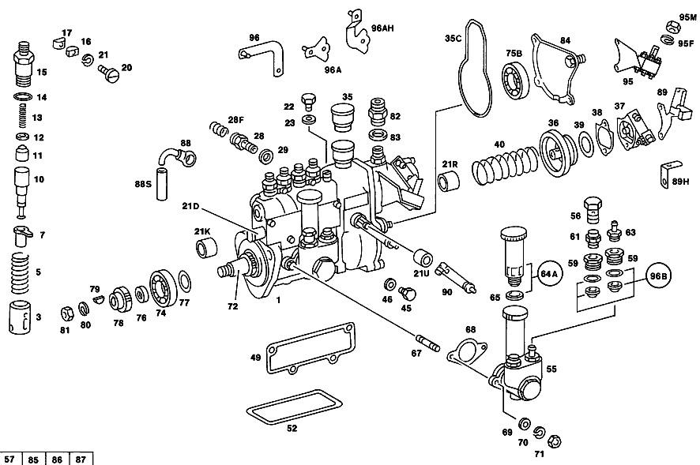

| № | Артикул | Название | Кол. | Примечание | Ограничение |
|---|---|---|---|---|---|
| 1 | A 615 070 12 01 | ТНВД | 1 | [402] БОЛЬШЕ НЕ ПОСТАВЛЯЕТСЯ | |
| 3 | A 000 074 10 29 | - ТОЛКАТЕЛЬ | 4 | [402] БОЛЬШЕ НЕ ПОСТАВЛЯЕТСЯ | |
| 5 | A 001 074 07 93 | - ПРУЖИНА | 4 | [402] БОЛЬШЕ НЕ ПОСТАВЛЯЕТСЯ | |
| 7 | A 000 074 03 49 | - ВТУЛКА РЕГУЛИРУЮЩАЯ | - | ||
| 7 | A 000 074 04 49 | - ВТУЛКА РЕГУЛИРУЮЩАЯ | 4 | ||
| 10 | A 000 074 59 22 | - ПАРА ПЛУНЖЕРНАЯ | 4 | ||
| 11 | A 000 074 11 15 | - КЛАПАН НАПОРНЫЙ | - | ||
| 11 | A 000 074 75 84 | - Клапан | 4 | ||
| 12 | A 001 997 34 40 | - Уплотнительное кольцо | 4 | ||
| 13 | A 000 074 37 93 | - пружина | 4 | ||
| 14 | A 004 997 79 45 | - Уплотнительное кольцо | - | ||
| 14 | A 017 997 41 48 | - Уплотнительное кольцо | 4 | ||
| 15 | A 000 078 09 69 | - РЕЗЬБ. ШТУЦЕР | 4 | ||
| 16 | A 000 078 14 35 | - зажимной элемент | 2 | ||
| 17 | A 000 078 13 35 | - зажимной элемент | 2 | ||
| 20 | N 000084 006161 | - Винт | 2 | ||
| 21 | N 912004 006102 | - Пружинное кольцо | 2 | ||
| 21D | A 000 074 20 26 | - ТЯГА РЕГУЛЯТОРА | 1 | [417] БОЛЬШЕ НЕ ПОСТАВЛЯЕТСЯ, ЗАКАЗЫВАТЬ КОМПЛЕКТ ПОСТАВКИ | |
| 21K | A 000 074 26 50 | - втулка | 1 | ||
| 21R | A 000 074 27 50 | - ВТУЛКА | 1 | ||
| 21U | A 000 074 28 50 | - ВТУЛКА | 2 | ВАЛ РЕГУЛЯТОРА | |
| 22 | A 000 074 17 71 | - болт | 1 | (ШТУЦЕР ПРОКАЧНОЙ) [402] БОЛЬШЕ НЕ ПОСТАВЛЯЕТСЯ | |
| 23 | N 007603 006100 | - Уплотнительное кольцо | 1 | ||
| 28 | A 000 074 03 84 | - КЛАПАН | - | ||
| 28 | A 000 074 72 84 | - Клапан | 1 | ||
| 28F | A 001 074 08 93 | - ПРУЖИНА | 1 | [402] БОЛЬШЕ НЕ ПОСТАВЛЯЕТСЯ | |
| 29 | N 007603 012405 | - Уплотнительное кольцо | 2 | ||
| 35 | A 000 075 09 32 | - Фильтр | 1 | ||
| 35C | A 000 074 15 59 | - УПЛОТНИТ. КОЛЬЦО | 1 | РЕГУЛЯТОР ТНВД,СЗАДИ | |
| 36 | A 000 075 06 07 | - Мембрана | 1 | ||
| 37 | A 000 075 00 04 | - КРЫШКА | 1 | ||
| 38 | A 000 074 08 80 | - ПРОКЛАДКА УПЛОТНИТЕЛЬНАЯ | - | ||
| 38 | A 001 074 23 80 | - ПРОКЛАДКА УПЛОТНИТЕЛЬНАЯ | 1 | ||
| 39 | A 000 077 03 52 | - Компенсационное кольцо | 1 | 0.5mm | |
| 39 | A 000 077 04 52 | - РАСПОРНАЯ ШАЙБА | 1 | 1.0 MM | |
| 39 | A 000 077 05 52 | - РАСПОРНАЯ ШАЙБА | 1 | 2.0 MM [402] БОЛЬШЕ НЕ ПОСТАВЛЯЕТСЯ | |
| 40 | A 000 074 71 93 | - ПРУЖИНА | 1 | ||
| 45 | A 615 997 01 30 | - ЗАГЛУШКА РЕЗЬБОВАЯ | 1 | [402] БОЛЬШЕ НЕ ПОСТАВЛЯЕТСЯ | |
| 46 | N 007603 010103 | - Уплотнительное кольцо | - | ||
| 46 | N 007603 010110 | - Уплотнительное кольцо | 1 | ||
| 49 | A 000 074 83 80 | - Уплотнительная прокладка | 1 | СБОКУ | |
| 52 | A 000 074 18 59 | - Уплотнительное кольцо | 1 | ВНИЗУ | |
| 55 | A 001 091 53 01 | - Топливный насос | 1 | ||
| 56 | A 636 990 07 63 | - Полый болт | 1 | ||
| 57 | A 000 091 08 10 | - КЛАПАН | - | [402] БОЛЬШЕ НЕ ПОСТАВЛЯЕТСЯ [100] ПО ОТДЕЛЬНОСТИ БОЛЬШЕ НЕ ПОСТАВЛЯЕТСЯ,ТОЛЬКО В РЕМ.КОМПЛЕКТЕ00 1 586 12 07 | |
| 58 | A 005 997 47 45 | - Уплотнительное кольцо | 2 | ||
| 59 | A 000 074 11 86 | - Резьбовой штуцер | 2 | ||
| 64A | A 000 090 00 50 | - ТОПЛИВНЫЙ | - | ||
| 64A | A 000 090 88 50 | - TS Топливный насос | 1 | (РУЧН. ПОДКАЧ. НАСОС) С УПЛОТНИТ. КОЛЬЦОМ | |
| 65 | N 007603 016401 | - Уплотнительное кольцо | 1 | ||
| 67 | A 000 990 00 05 | - Шпилька | - | ||
| 67 | A 000 990 95 05 | - ШПИЛЬКА | 2 | ||
| 68 | A 000 091 11 80 | - ПРОКЛАДКА УПЛОТНИТЕЛЬНАЯ | - | ||
| 68 | A 000 091 17 80 | - Уплотнение | 1 | ||
| 69 | N 000433 006400 | - Шайба | 2 | ||
| 70 | N 912004 006102 | - Пружинное кольцо | 2 | ||
| 71 | N 000934 006013 | - Гайка | - | ||
| 71 | N 304032 006008 | - Шестигранная гайка | 2 | ||
| 72 | A 000 074 31 10 | - РАСПРЕДВАЛ | 1 | [417] БОЛЬШЕ НЕ ПОСТАВЛЯЕТСЯ, ЗАКАЗЫВАТЬ КОМПЛЕКТ ПОСТАВКИ | |
| 74 | N 000625 900205 | - Шарикоподшипник | 1 | ПРИВОДН. ОПОРА [402] БОЛЬШЕ НЕ ПОСТАВЛЯЕТСЯ | |
| 75B | N 000625 036003 | - Шарикоподшипник | - | ||
| 75B | A 008 981 34 25 | - ШАРИКОПОДШИПНИК | 1 | ||
| 76 | A 004 997 49 47 | - Уплотнительное кольцо | 1 | ||
| 77 | A 000 074 48 52 | - РАСПОРНАЯ ШАЙБА | NB | 0.1 MM [402] БОЛЬШЕ НЕ ПОСТАВЛЯЕТСЯ | |
| 77 | A 000 074 49 52 | - РАСПОРНАЯ ШАЙБА | NB | 0.15 MM | |
| 77 | A 000 074 36 52 | - Дистанционная шайба | NB | 0.3 MM [402] БОЛЬШЕ НЕ ПОСТАВЛЯЕТСЯ | |
| 77 | A 000 074 37 52 | - Дистанционная шайба | NB | 0.5mm [402] БОЛЬШЕ НЕ ПОСТАВЛЯЕТСЯ | |
| 78 | A 621 077 00 09 | - Поводок | 1 | ||
| 79 | N 006888 003003 | - Сегментная шпонка | 1 | ||
| 80 | N 912004 012100 | - Пружинное кольцо | 1 | ||
| 81 | N 000934 012021 | - Гайка | 1 | ||
| 82 | N 915013 006002 | - Штуцер | 1 | ||
| 83 | N 007603 012405 | - Уплотнительное кольцо | 1 | ||
| 84 | A 621 070 01 24 | - ОПОРА ПОДШИПНИКА | 1 | СМ. РИС.: 463 СМ. РИС.: 464 СМ. РИС.: 465 | |
| 88 | A 615 070 00 80 | - Провод | 1 | ||
| 90 | A 000 074 56 27 | - РЫЧАГ | 1 | ||
| 95 | A 621 070 17 40 | - Держатель | 1 | ||
| 95F | N 912004 005103 | - Пружинное кольцо | 6 | ||
| 95M | N 000934 005008 | - Гайка | 6 | M5 | |
| 96B | A 001 586 12 07 | ремкомплект | 1 | КЛАПАН [402] БОЛЬШЕ НЕ ПОСТАВЛЯЕТСЯ | |
| 97 | N 007603 010103 | Уплотнительное кольцо | - | ||
| 97 | N 007603 010110 | Уплотнительное кольцо | 1 | ||
| 97S | A 615 997 01 30 | ЗАГЛУШКА РЕЗЬБОВАЯ | 1 | [402] БОЛЬШЕ НЕ ПОСТАВЛЯЕТСЯ | |
| 99C | A 615 990 02 40 | ШАЙБА | 1 | [402] БОЛЬШЕ НЕ ПОСТАВЛЯЕТСЯ | |
| 99H | N 000094 001610 | Шплинт | - | ||
| 99H | N 000094 001617 | Шплинт | 1 | ||
| 100 | N 912004 008102 | Пружинное кольцо | 1 | ||
| 101 | N 000439 008211 | Гайка | - | ||
| 101 | N 304035 008001 | Шестигранная гайка | 1 | M8 | |
| 110 | A 621 076 04 35 | Кронштейн | 1 | ||
| 111 | N 000127 008100 | КОЛЬЦО ПРУЖИННОЕ | 1 | ||
| 112 | N 000933 008212 | Винт | - | ||
| 112 | N 304017 008016 | Винт с 6-гранной головкой | 1 | M8X16 | |
| 115 | A 621 077 00 16 | Соединительная втулка | 1 | ||
| 116 | N 009045 032000 | Пруж. стопорное кольцо | 1 | ||
| 120 | A 621 074 02 79 | ПРОКЛАДКА УПЛОТНИТЕЛЬНАЯ | - | ||
| 120 | A 615 074 00 80 | ПРОКЛАДКА УПЛОТНИТЕЛЬНАЯ | - | ||
| 120 | A 616 074 00 80 | Уплотнение | 1 | ||
| 121 | N 000125 008418 | Шайба | - | ||
| 121 | N 000125 008443 | Шайба | 3 | 8 MM | |
| 122 | N 000934 008013 | Гайка | 3 | ||
| 123 | A 615 070 04 45 | Регулятор угла оп.впрыска | 1 | ||
| 123 | A 615 070 06 45 | МЕХ-М РЕГ. ОПЕР. ВПРЫСКА | 1 | ||
| 128 | A 615 075 00 25 | - ПЛАСТИНА СЕГМЕНТА | 1 | [402] БОЛЬШЕ НЕ ПОСТАВЛЯЕТСЯ | |
| 129 | A 636 075 00 35 | - ГРУЗ РЕГУЛЯТОРА | 2 | [417] БОЛЬШЕ НЕ ПОСТАВЛЯЕТСЯ, ЗАКАЗЫВАТЬ КОМПЛЕКТ ПОСТАВКИ | |
| 130 | A 615 075 00 74 | - Палец | 4 | ||
| 131 | A 636 993 05 01 | - пружина | 2 | [402] БОЛЬШЕ НЕ ПОСТАВЛЯЕТСЯ | |
| 132 | A 621 075 01 74 | - Палец | 2 | ||
| 136 | A 615 234 00 44 | - Приводной фланец | 1 | С ДИСКОВЫМ КУЛАЧКОМ | |
| 140 | A 615 070 01 57 | - Сегментный фланец | 1 | ||
| 140 | A 615 070 05 57 | - СЕГМЕНТ | 1 | ||
| 141 | A 615 990 00 19 | - БОЛТ | 2 | [402] БОЛЬШЕ НЕ ПОСТАВЛЯЕТСЯ | |
| 142 | A 621 075 04 50 | втулка | 1 | ||
| 142 | A 615 075 03 50 | ВТУЛКА | 1 | [402] БОЛЬШЕ НЕ ПОСТАВЛЯЕТСЯ | |
| 143 | A 127 052 00 53 | Упорное кольцо | 1 | ||
| 144 | N 006888 003001 | Сегментная шпонка | 2 | РЕГУЛЯТОР УГЛА ОПЕРЕЖЕНИЯ ВПРЫСКА НА ПРОМЕЖУТОЧНОМ ВАЛУ | |
| 145 | N 000125 013003 | ШАЙБА | 1 | РЕГУЛЯТОР УГЛА ОПЕРЕЖЕНИЯ ВПРЫСКА НА ПРОМЕЖУТОЧНОМ ВАЛУ | |
| 145 | A 615 990 03 40 | Диск | 1 | РЕГУЛЯТОР УГЛА ОПЕРЕЖЕНИЯ ВПРЫСКА НА ПРОМЕЖУТОЧНОМ ВАЛУ | |
| 146 | N 000985 012005 | ГАЙКА | 1 | РЕГУЛЯТОР УГЛА ОПЕРЕЖЕНИЯ ВПРЫСКА НА ПРОМЕЖУТОЧНОМ ВАЛУ | |
| 146 | N 000934 014019 | Гайка | - | ||
| 146 | N 308673 014001 | Шестигранная гайка | 1 | РЕГУЛЯТОР УГЛА ОПЕРЕЖЕНИЯ ВПРЫСКА НА ПРОМЕЖУТОЧНОМ ВАЛУ; M14X1.5 | |
| 150 | A 000 017 55 21 | ФОРСУНКА | 4 | ||
| 150 | A 002 017 24 21 | ФОРСУНКА | - | ||
| 150 | A 002 017 22 21 | Кронштейн форсунки | 4 | [402] БОЛЬШЕ НЕ ПОСТАВЛЯЕТСЯ | |
| 150 | A 002 017 23 21 | Кронштейн форсунки | 4 | [697] ДЕТАЛЬ ПОСТАВЛЯЕТСЯ ТОЛЬКО/ИЛИ ТАКЖЕ КАК ЗАП.ЧАСТЬ | |
| 152 | A 000 017 31 21 | - ФОРСУНКА | 4 | ВЕРХ.ЧАСТЬ TO 000 017 55 21 | |
| 152 | A 001 017 22 21 | - Кронштейн форсунки | 4 | ВЕРХ.ЧАСТЬ TO 001 017 05 21,001 017 21 21 | |
| 152 | A 002 017 03 21 | - ФОРСУНКА | 4 | ВЕРХ.ЧАСТЬ TO 002 017 23 21,002 017 24 21, 002 017 22 21 [417] БОЛЬШЕ НЕ ПОСТАВЛЯЕТСЯ, ЗАКАЗЫВАТЬ КОМПЛЕКТ ПОСТАВКИ | |
| 155 | A 000 017 36 52 | - Дистанционная шайба | NB | 1.00 MM | |
| 155 | A 003 017 44 52 | - Компенсационная шайба | NB | 1.00 MM | |
| 155 | A 000 017 37 52 | - Дистанционная шайба | NB | 1.05 MM | |
| 155 | A 000 017 38 52 | - Дистанционная шайба | NB | 1.10 MM | |
| 155 | A 000 017 39 52 | - Дистанционная шайба | NB | 1.15 MM | |
| 155 | A 003 017 58 52 | - Компенсационная шайба | NB | 1.15 MM [402] БОЛЬШЕ НЕ ПОСТАВЛЯЕТСЯ | |
| 155 | A 000 017 40 52 | - Дистанционная шайба | - | ||
| 155 | A 003 017 64 52 | - Дистанционная шайба | NB | 1.20 MM [402] БОЛЬШЕ НЕ ПОСТАВЛЯЕТСЯ | |
| 155 | A 000 017 41 52 | - Дистанционная шайба | NB | 1.25 MM | |
| 155 | A 000 017 42 52 | - Дистанционная шайба | - | ||
| 155 | A 003 017 74 52 | - Дистанционная шайба | NB | 1.30 MM [402] БОЛЬШЕ НЕ ПОСТАВЛЯЕТСЯ | |
| 155 | A 000 017 43 52 | - Дистанционная шайба | NB | 1.35 MM | |
| 155 | A 003 017 78 52 | - Дистанционная шайба | NB | 1.35 MM [402] БОЛЬШЕ НЕ ПОСТАВЛЯЕТСЯ | |
| 155 | A 000 017 44 52 | - Дистанционная шайба | - | ||
| 155 | A 003 017 84 52 | - Дистанционная шайба | NB | 1.40 MM | |
| 155 | A 000 017 45 52 | - Дистанционная шайба | NB | 1.45 MM [402] БОЛЬШЕ НЕ ПОСТАВЛЯЕТСЯ | |
| 155 | A 000 017 46 52 | - Дистанционная шайба | NB | ||
| 155 | A 003 017 94 52 | - Дистанционная шайба | NB | 1.50 MM | |
| 155 | A 000 017 47 52 | - Дистанционная шайба | NB | 1.55 MM | |
| 155 | A 000 017 48 52 | - Дистанционная шайба | NB | 1.60 MM | |
| 155 | A 000 017 49 52 | - Дистанционная шайба | NB | 1.65 MM | |
| 155 | A 000 017 50 52 | - Дистанционная шайба | - | ||
| 155 | A 004 017 14 52 | - Дистанционная шайба | NB | 1.70 MM [402] БОЛЬШЕ НЕ ПОСТАВЛЯЕТСЯ | |
| 155 | A 000 017 51 52 | - Дистанционная шайба | NB | 1.75 MM | |
| 155 | A 000 017 52 52 | - Дистанционная шайба | NB | ||
| 155 | A 004 017 24 52 | - Дистанционная шайба | NB | 1.80 MM | |
| 155 | A 000 017 53 52 | - Дистанционная шайба | NB | 1.85 MM | |
| 155 | A 000 017 54 52 | - Дистанционная шайба | NB | 1.90 MM | |
| 155 | A 000 017 55 52 | - Дистанционная шайба | NB | 1.95 MM | |
| 160 | A 000 017 04 17 | - Винтовая пружина | 4 | ||
| 161 | A 000 017 11 74 | - Палец | - | ||
| 161 | A 000 017 15 74 | - Палец | 4 | ||
| 162 | A 000 017 01 22 | - Вставка | 4 | ||
| 163 | A 000 017 05 16 | - НАКИДНАЯ ГАЙКА | 4 | ||
| 163 | A 000 017 10 16 | - НАКИДНАЯ ГАЙКА | - | ||
| 163 | A 000 017 24 16 | - Накидная гайка | - | ||
| 163 | A 000 017 31 16 | - Накидная гайка | 4 | ||
| 164 | A 000 017 28 12 | - Штифтовая форсунка | 4 | TO 002 017 24 21,001 017 05 21 | |
| 164 | A 000 017 28 12 | - Штифтовая форсунка | 4 | TO 000 017 55 21 | |
| 164 | A 001 017 46 12 | - Жиклер | 4 | TO 002 017 22 21 | |
| 164 | A 000 017 69 12 | - Штифтовая форсунка | 4 | TO 002 017 23 21 | |
| 164 | A 000 017 69 12 | - Штифтовая форсунка | 4 | А/М С УСИЛЕННЫМ КРЮКОМ | |
| 168 | A 636 017 01 20 | УПЛОТНИТЕЛЬНАЯ ШАЙБА | - | ||
| 168 | A 617 017 02 60 | Уплотнительное кольцо | - | ||
| 168 | A 617 017 03 60 | уплотнение | - | [414] СТАРУЮ ДЕТАЛЬ УСТАНАВЛИВАТЬ БОЛЬШЕ НЕ РАЗРЕШАЕТСЯ | |
| 168 | A 617 017 00 60 | УПЛОТНИТ. КОЛЬЦО | - | ||
| 168 | A 617 017 03 60 | уплотнение | - | [414] СТАРУЮ ДЕТАЛЬ УСТАНАВЛИВАТЬ БОЛЬШЕ НЕ РАЗРЕШАЕТСЯ | |
| 168 | A 617 017 02 60 | Уплотнительное кольцо | - | ||
| 168 | A 617 017 03 60 | уплотнение | 4 | ||
| 175 | A 615 070 05 33 | ПРОВОД | - | ||
| 175 | A 615 070 19 33 | Провод | 1 | ЦИЛИНДР №1 | |
| 175 | A 615 070 19 33 | Провод | 1 | ЦИЛИНДР №1 | |
| 176 | A 615 070 06 33 | ПРОВОД | - | ||
| 176 | A 615 070 20 33 | Провод | 1 | ЦИЛИНДР №2 | |
| 176 | A 615 070 20 33 | Провод | 1 | ЦИЛИНДР №2 | |
| 177 | A 615 070 02 33 | ПРОВОД | - | ||
| 177 | A 615 070 21 33 | Провод | 1 | ЦИЛИНДР №3 | |
| 177 | A 615 070 21 33 | Провод | 1 | ЦИЛИНДР №3 | |
| 178 | A 615 070 03 33 | ПРОВОД | - | ||
| 178 | A 615 070 22 33 | Провод | 1 | ЦИЛИНДР №4 | |
| 178 | A 615 070 22 33 | Провод | 1 | ЦИЛИНДР №4 | |
| 179 | A 312 078 02 85 | Трубный кронштейн | 8 | ||
| 180 | N 000933 005075 | Винт | - | ||
| 180 | N 304017 005002 | Винт с 6-гранной головкой | 4 | M5X16 | |
| 181 | N 912004 005103 | Пружинное кольцо | - | ||
| 182 | N 304032 005005 | Шестигранная гайка | 4 | M 5 | |
| 186 | A 615 159 00 40 | ДЕРЖАТЕЛЬ | 1 | ||
| 205 | A 001 477 54 01 | Топливный фильтр | 1 | ||
| 206 | A 002 993 28 01 | - пружина | 1 | ||
| 207 | A 000 477 01 76 | - Кронштейн уплотнителя | 1 | ||
| 208 | A 000 470 01 92 | - FILTER INSERT | 1 | ОБЪЁМ ПОСТАВКИ [402] БОЛЬШЕ НЕ ПОСТАВЛЯЕТСЯ | |
| 210 | A 100 997 00 40 | - Уплотнение | 1 | ||
| 211 | N 007603 016401 | - Уплотнительное кольцо | 1 | ||
| 212 | A 000 477 08 73 | - гайка | 1 | [402] БОЛЬШЕ НЕ ПОСТАВЛЯЕТСЯ [040] ДЕЙСТВИТЕЛЬНО ТОЛЬКО ДЛЯ ТОПЛИВНОГО ФИЛЬТРА 001 477 54 01 | |
| 213 | A 000 074 17 71 | - болт | 1 | (ШТУЦЕР ПРОКАЧНОЙ) [402] БОЛЬШЕ НЕ ПОСТАВЛЯЕТСЯ [039] ДЕЙСТВИТ. ТОЛЬКО ДЛЯ ТОПЛИВ.ФИЛЬТРА 000 477 86 01 И 001 477 24 01 | |
| 214 | N 007603 006100 | - Уплотнительное кольцо | 1 | [039] ДЕЙСТВИТ. ТОЛЬКО ДЛЯ ТОПЛИВ.ФИЛЬТРА 000 477 86 01 И 001 477 24 01 | |
| 215 | N 007604 014106 | - Резьбовая пробка | - | ||
| 215 | N 007604 014110 | - Резьбовая пробка | 1 | [039] ДЕЙСТВИТ. ТОЛЬКО ДЛЯ ТОПЛИВ.ФИЛЬТРА 000 477 86 01 И 001 477 24 01 | |
| 216 | N 007603 014100 | - Уплотнительное кольцо | 1 | 14X18\-AL [039] ДЕЙСТВИТ. ТОЛЬКО ДЛЯ ТОПЛИВ.ФИЛЬТРА 000 477 86 01 И 001 477 24 01 | |
| 217 | A 002 993 03 01 | - ПРУЖИНА | 1 | [402] БОЛЬШЕ НЕ ПОСТАВЛЯЕТСЯ [041] ДЕЙСТВИТЕЛЬНО ТОЛЬКО ДЛЯ ТОПЛИВНОГО ФИЛЬТРА 001 477 18 01 | |
| 218 | A 000 477 00 76 | - ШАЙБА | - | ||
| 218 | A 000 477 01 76 | - Кронштейн уплотнителя | 1 | [041] ДЕЙСТВИТЕЛЬНО ТОЛЬКО ДЛЯ ТОПЛИВНОГО ФИЛЬТРА 001 477 18 01 | |
| 219 | A 000 092 15 05 | - ЭЛЕМЕНТ ФИЛЬТРУЮЩИЙ | 1 | [402] БОЛЬШЕ НЕ ПОСТАВЛЯЕТСЯ | |
| 220 | A 000 477 35 80 | - Уплотнительное кольцо | 1 | [041] ДЕЙСТВИТЕЛЬНО ТОЛЬКО ДЛЯ ТОПЛИВНОГО ФИЛЬТРА 001 477 18 01 | |
| 225 | A 000 477 31 72 | - БОЛТ | 1 | [402] БОЛЬШЕ НЕ ПОСТАВЛЯЕТСЯ [041] ДЕЙСТВИТЕЛЬНО ТОЛЬКО ДЛЯ ТОПЛИВНОГО ФИЛЬТРА 001 477 18 01 | |
| 226 | N 007603 014100 | - Уплотнительное кольцо | 1 | 14X18\-AL [041] ДЕЙСТВИТЕЛЬНО ТОЛЬКО ДЛЯ ТОПЛИВНОГО ФИЛЬТРА 001 477 18 01 | |
| 227 | A 000 074 17 71 | - болт | 1 | (ШТУЦЕР ПРОКАЧНОЙ) [402] БОЛЬШЕ НЕ ПОСТАВЛЯЕТСЯ [041] ДЕЙСТВИТЕЛЬНО ТОЛЬКО ДЛЯ ТОПЛИВНОГО ФИЛЬТРА 001 477 18 01 | |
| 228 | N 007603 006100 | - Уплотнительное кольцо | 1 | [041] ДЕЙСТВИТЕЛЬНО ТОЛЬКО ДЛЯ ТОПЛИВНОГО ФИЛЬТРА 001 477 18 01 | |
| 230 | A 621 477 00 53 | РАСПОРН. ТРУБКА | 2 | ||
| 231 | A 615 092 01 40 | ДЕРЖАТЕЛЬ | 1 | [402] БОЛЬШЕ НЕ ПОСТАВЛЯЕТСЯ | |
| 232 | A 621 477 01 76 | Тарельчатый диск | 4 | [402] БОЛЬШЕ НЕ ПОСТАВЛЯЕТСЯ | |
| 233 | A 621 477 00 76 | Эластомерная шайба | 4 | ||
| 234 | N 000931 007020 | Винт | 1 | ||
| 235 | N 000934 007005 | Гайка | 2 | ||
| 236 | N 912004 007100 | Пружинное кольцо | - | ||
| 237 | N 000125 007408 | Шайба | 1 | ||
| 240 | A 621 477 00 74 | Стяжной болт | 1 | [065] СИСТ.РЕГУЛИРОВАНИЯ УРОВНЯ КУЗОВА ДО ДВИГ. 912 10/50,20/60 383295 912 12/52,22/62 041623 913 10/50,20/60 323251 913 12/52,22/62 008911 | |
| 240 | A 615 092 00 70 | БОЛТ | 1 | [402] БОЛЬШЕ НЕ ПОСТАВЛЯЕТСЯ [066] СИСТ.РЕГУЛИРОВКИ УРОВНЯ КУЗОВА НАЧ. С ДВИГ. 912 10/50,20/60 383296 912 12/52,22/62 041624 913 10/50,20/60 323252 913 12/52,22/62 008912 | |
| 241 | N 000933 012077 | Винт | 1 | [402] БОЛЬШЕ НЕ ПОСТАВЛЯЕТСЯ [065] СИСТ.РЕГУЛИРОВАНИЯ УРОВНЯ КУЗОВА ДО ДВИГ. 912 10/50,20/60 383295 912 12/52,22/62 041623 913 10/50,20/60 323251 913 12/52,22/62 008911 | |
| 241 | N 000931 008244 | Винт | 1 | [066] СИСТ.РЕГУЛИРОВКИ УРОВНЯ КУЗОВА НАЧ. С ДВИГ. 912 10/50,20/60 383296 912 12/52,22/62 041624 913 10/50,20/60 323252 913 12/52,22/62 008912 | |
| 241F | N 000137 012203 | Пружинная шайба | - | ||
| 241F | N 000137 012206 | Пружинная шайба | 1 | [065] СИСТ.РЕГУЛИРОВАНИЯ УРОВНЯ КУЗОВА ДО ДВИГ. 912 10/50,20/60 383295 912 12/52,22/62 041623 913 10/50,20/60 323251 913 12/52,22/62 008911 | |
| 242 | A 615 092 01 76 | ШАЙБА | 1 | [402] БОЛЬШЕ НЕ ПОСТАВЛЯЕТСЯ [066] СИСТ.РЕГУЛИРОВКИ УРОВНЯ КУЗОВА НАЧ. С ДВИГ. 912 10/50,20/60 383296 912 12/52,22/62 041624 913 10/50,20/60 323252 913 12/52,22/62 008912 | |
| 250 | A 617 070 00 35 | Топливопровод | 1 | ОТ ТОПЛИВН.НАСОСА К ФИЛЬТРУ | |
| 251 | N 915011 008103 | ПОЛЫЙ БОЛТ | 2 | ||
| 252 | N 007603 014100 | Уплотнительное кольцо | 4 | 14X18\-AL | |
| 254 | A 615 070 04 32 | Провод | 1 | ОТ ФИЛЬТРА К ТНВД | |
| 255 | N 915006 006003 | ШТУЦЕР ДВОЙНОЙ | 1 | ||
| 256 | N 007603 014100 | Уплотнительное кольцо | 1 | 14X18\-AL | |
| 260 | N 915011 008103 | ПОЛЫЙ БОЛТ | 3 | ||
| 261 | A 615 990 02 63 | Полый болт | 1 | ||
| 262 | N 007603 014100 | Уплотнительное кольцо | 2 | 14X18\-AL | |
| 263 | A 615 070 01 32 | ПРОВОД | 1 | ТРУБКА ОБРАТНОЙ МАГИСТРАЛИ | |
| 263 | A 615 070 20 32 | Провод | 1 | ТРУБКА ОБРАТНОЙ МАГИСТРАЛИ | |
| 264 | N 007603 012405 | Уплотнительное кольцо | 2 | ||
| 265 | A 615 997 00 82 | Шланг | 1 | ||
| 266 | A 008 997 64 82 | Шланг | 1 | ОБРАТНАЯ МАГИСТРАЛЬ | |
| 266S | N 900269 012100 | ХОМУТ | 1 | ||
| 266S | N 900269 014100 | ХОМУТ | 1 | ||
| 267 | A 615 476 00 26 | ШЛАНГ | - | ||
| 267 | A 615 476 03 26 | ШЛАНГ | - | ||
| 267 | A 605 078 05 81 | Топливный шланг | 3 | МЕЖДУ ДЕРЖАТЕЛЯМИ РАСПЫЛИТ. 160 MM [404] ЗАКАЗЫВАТЬ ПОГОННЫМИ МЕТРАМИ | |
| 267 | A 605 078 05 81 | Топливный шланг | 1 | 200mm [404] ЗАКАЗЫВАТЬ ПОГОННЫМИ МЕТРАМИ [130] ДО ДВИГ.НОВ.КОМПЛЕКТ. 9/82 | |
| 271 | A 615 476 01 26 | ШЛАНГ | - | ||
| 275 | A 000 987 11 45 | Защитный колпачок | - | ||
| 275 | A 403 070 03 55 | ЭКРАН | - | ||
| 275 | A 403 070 00 55 | КРЫШКА РЕЗИНОВАЯ | - | ||
| 275 | A 601 070 00 55 | КРЫШКА РЕЗИНОВАЯ | - | ||
| 275 | A 604 070 02 55 | Накладка конт. штифта | 1 | ||
| 280 | A 615 070 06 32 | Провод | 1 | ||
| 281 | A 621 990 02 63 | Полый болт | 1 | ||
| 282 | N 007603 012405 | Уплотнительное кольцо | 2 | ||
| 310 | A 615 070 22 28 | Регулирующая заслонка | 1 | [697] ДЕТАЛЬ ПОСТАВЛЯЕТСЯ ТОЛЬКО/ИЛИ ТАКЖЕ КАК ЗАП.ЧАСТЬ | |
| 311 | A 636 071 01 85 | - ДИФФУЗОР | 1 | ||
| 312 | A 621 071 01 47 | - ВЕНТИЛЯЦИЯ | 1 | [402] БОЛЬШЕ НЕ ПОСТАВЛЯЕТСЯ | |
| 313 | A 615 071 00 11 | - Дроссельная заслонка | 1 | ||
| 314 | A 615 071 00 10 | - ДРОССЕЛЬНАЯ ЗАСЛОНКА | 1 | [402] БОЛЬШЕ НЕ ПОСТАВЛЯЕТСЯ | |
| 315 | A 615 070 03 29 | - ВАЛ | 1 | ||
| 320 | A 615 071 01 10 | - ДРОССЕЛЬНАЯ ЗАСЛОНКА | 1 | ||
| 323 | N 000964 004008 | - Винт | - | ||
| 323 | N 000966 004005 | - Винт | 4 | ||
| 324 | N 000125 008418 | - Шайба | - | ||
| 324 | N 000125 008443 | - Шайба | 2 | 8 MM | |
| 325 | A 621 993 03 01 | - пружина | 1 | ||
| 326 | N 006799 007007 | - Стопорная шайба | 1 | ||
| 330 | N 900055 008002 | - Пружинная шайба | NB | ||
| 331 | N 304032 005005 | - Шестигранная гайка | 2 | M 5 | |
| 332 | N 000084 005180 | - Винт | - | ||
| 332 | N 007985 005175 | - Винт | - | M5X16 | |
| 332 | N 000000 001181 | - Винт с 6-гр. глвк | 2 | M5X16 | |
| 336 | A 615 586 01 07 | РЕМКОМПЛЕКТ | - | ||
| 336 | A 615 070 14 21 | Рычаг | 1 | РЕГУЛЯТОР ЗАСЛОНКИ | |
| 337 | A 621 993 02 10 | ПРУЖИНА | 1 | [402] БОЛЬШЕ НЕ ПОСТАВЛЯЕТСЯ | |
| 338 | A 636 074 02 80 | уплотнение | 1 | ||
| 339 | N 000137 006204 | Пружинная шайба | 4 | ||
| 340 | N 000934 006013 | Гайка | - | ||
| 340 | N 304032 006008 | Шестигранная гайка | 4 | ||
| 345 | A 615 070 01 24 | ОПОРА ПОДШИПНИКА | 1 | ||
| 345H | A 617 070 14 24 | Опорный кронштейн | 1 | ||
| 346 | A 186 305 01 15 | болт | 1 | ||
| 346 | A 617 072 02 71 | болт | 1 | ||
| 347 | N 000934 006013 | Гайка | - | ||
| 347 | N 304032 006008 | Шестигранная гайка | 1 | ||
| 347 | N 000439 008211 | Гайка | - | ||
| 347 | N 304035 008001 | Шестигранная гайка | 1 | M8 | |
| 348 | N 912004 008102 | Пружинное кольцо | 2 | ||
| 349 | N 000933 008212 | Винт | - | ||
| 349 | N 304017 008016 | Винт с 6-гранной головкой | 2 | M8X16 | |
| 355 | A 615 070 02 22 | РЫЧАГ | 1 | ||
| 355 | A 615 070 05 22 | Рычаг | 1 | ||
| 361 | N 006799 007007 | Стопорная шайба | 1 | ||
| 362 | A 615 075 00 34 | ТЯГА | 1 | [402] БОЛЬШЕ НЕ ПОСТАВЛЯЕТСЯ | |
| 362 | A 615 070 12 75 | Нажимная штанга | 1 | ||
| 366 | N 304032 005005 | Шестигранная гайка | 2 | M 5 | |
| 368 | A 000 991 16 22 | Шаровой подпятник | - | ||
| 368 | A 000 991 89 22 | ПОДПЯТНИК ШАРОВОЙ | 2 | ||
| 368 | A 000 993 04 61 | Шаровой подпятник | 2 | ||
| 370 | A 615 997 04 82 | ШЛАНГ | 1 | [402] БОЛЬШЕ НЕ ПОСТАВЛЯЕТСЯ | |
| 372 | N 900331 005045 | Тяга | 1 | ||
| 372F | A 615 070 11 75 | ТЯГА | - | ||
| 372F | A 617 070 01 75 | ТЯГА | 1 | [402] БОЛЬШЕ НЕ ПОСТАВЛЯЕТСЯ | |
| 373 | A 000 991 16 22 | - Шаровой подпятник | - | ||
| 373 | A 000 991 89 22 | - ПОДПЯТНИК ШАРОВОЙ | 2 | ||
| 373 | A 000 993 04 61 | - Шаровой подпятник | 2 | ||
| 374 | N 304032 005005 | - Шестигранная гайка | 2 | M 5 | |
| 390 | A 621 070 05 24 | ОПОРА ПОДШИПНИКА | 1 | ||
| 391 | N 912004 008008 | КОЛЬЦО ПРУЖИННОЕ | 1 | ||
| 392 | N 000934 008013 | Гайка | 1 | ||
| 393 | N 000933 008212 | Винт | - | ||
| 393 | N 304017 008016 | Винт с 6-гранной головкой | 1 | M8X16 | |
| 393 | N 000933 006103 | Винт | - | ||
| 393 | N 304017 006018 | Винт с 6-гранной головкой | 2 | M6X12 | |
| 400 | A 615 070 06 22 | РЫЧАГ | 1 | Коробка передач | |
| 401 | A 615 070 01 22 | Рычаг | 1 | Автоматическая коробка переключения передач | |
| 405 | A 115 072 04 50 | втулка | 2 | Коробка передач | |
| 405 | A 115 072 04 50 | втулка | 2 | Автоматическая коробка переключения передач | |
| 406 | A 110 991 00 15 | ЦАПФА СФЕРИЧЕСКАЯ | 1 | Автоматическая коробка переключения передач | |
| 407 | A 120 990 22 40 | ШАЙБА | 1 | Автоматическая коробка переключения передач | |
| 408 | N 912004 005103 | Пружинное кольцо | 1 | Автоматическая коробка переключения передач | |
| 409 | N 000934 005008 | Гайка | 1 | M5 Автоматическая коробка переключения передач | |
| 410 | N 006799 007007 | Стопорная шайба | 1 | ||
| 412 | A 615 070 31 75 | ТЯГА | 1 | Автоматическая коробка переключения передач | |
| 413 | A 615 070 02 75 | Нажимная штанга | 1 | Коробка передач | |
| 414 | N 900331 005044 | - Тяга | 1 | Автоматическая коробка переключения передач | |
| 415 | A 000 991 16 22 | - Шаровой подпятник | - | ||
| 415 | A 000 991 89 22 | - ПОДПЯТНИК ШАРОВОЙ | 2 | ||
| 415 | A 000 993 04 61 | - Шаровой подпятник | 2 | ||
| 416 | N 000934 005008 | - Гайка | 2 | M5 | |
| 430 | A 615 070 20 75 | ТЯГА | 1 | УПРАВЛ. ДАВЛЕНИЕ Автоматическая коробка переключения передач [402] БОЛЬШЕ НЕ ПОСТАВЛЯЕТСЯ | |
| 430 | A 615 070 22 75 | Нажимная штанга | 1 | УПРАВЛ. ДАВЛЕНИЕ Автоматическая коробка переключения передач | |
| 431 | A 110 277 05 50 | - втулка | 1 | Автоматическая коробка переключения передач | |
| 432 | A 115 300 00 86 | - Шаровой подпятник | - | Автоматическая коробка переключения передач | |
| 432 | A 000 991 88 22 | - Шаровой подпятник | 1 | Автоматическая коробка переключения передач | |
| 433 | N 000934 005008 | - Гайка | 1 | M5 Автоматическая коробка переключения передач | |
| 434 | N 073379 006203 | - Шланг | 1 | 200mm Автоматическая коробка переключения передач [404] ЗАКАЗЫВАТЬ ПОГОННЫМИ МЕТРАМИ | |
| A 615 070 00 01 | ТНВД | - | |||
| A 000 078 03 35 | - ЗАЖИМ | - | |||
| A 000 078 02 35 | - ЗАЖИМ | - | |||
| A 000 074 45 93 | - ПРУЖИНА | - | |||
| A 001 091 00 01 | - ТОПЛИВНЫЙ | - | |||
| A 001 997 09 40 | - УПЛОТНИТ. КОЛЬЦО | - | |||
| A 000 997 42 48 | - Уплотнительное кольцо | - | [415] ПРИМЕЧ. ПО ЗАМЕНЕ ПРИМЕНИМО ТОЛЬКО ДЛЯ СТОЯЩИХ РЯДОМ ПОЗИЦИЙ | ||
| A 001 091 45 01 | - ТОПЛИВНЫЙ | - | [402] БОЛЬШЕ НЕ ПОСТАВЛЯЕТСЯ [417] БОЛЬШЕ НЕ ПОСТАВЛЯЕТСЯ, ЗАКАЗЫВАТЬ КОМПЛЕКТ ПОСТАВКИ | ||
| A 621 070 00 80 | - ВЕНТИЛЯЦИЯ | - | [049] ИСПОЛЬЗОВАТЬ СТАРЫЙ НОМЕР ДЕТАЛИ ДО ДВИГАТЕЛЯ 912 10/50,20/60 361161 912 12/52,22/62 039073 913 10/50,20/50 251029 913 12/52,22/62 006941 910 088593 917 087726 936 000128 937 000130 938 001097 915 999999 | ||
| A 615 070 00 40 | - ДЕРЖАТЕЛЬ | - | |||
| A 615 302 00 85 | - РЕЗИНОВЫЙ УПОР | - | |||
| A 601 074 04 32 | втулка | NB | [152] ТОЛЬКО ДЛЯ КОНТРОЛЯ ТОКСИЧНОСТИ ОГ | ||
| A 601 074 05 32 | втулка | NB | [152] ТОЛЬКО ДЛЯ КОНТРОЛЯ ТОКСИЧНОСТИ ОГ | ||
| N 007604 010102 | Резьбовая пробка | - | [415] ПРИМЕЧ. ПО ЗАМЕНЕ ПРИМЕНИМО ТОЛЬКО ДЛЯ СТОЯЩИХ РЯДОМ ПОЗИЦИЙ | ||
| A 621 990 01 40 | ШАЙБА | - | |||
| A 615 070 00 45 | МЕХ-М РЕГ. ОПЕР. ВПРЫСКА | - | |||
| A 621 075 02 74 | - БОЛТ | - | |||
| N 000433 015000 | Шайба | - | [415] ПРИМЕЧ. ПО ЗАМЕНЕ ПРИМЕНИМО ТОЛЬКО ДЛЯ СТОЯЩИХ РЯДОМ ПОЗИЦИЙ | ||
| A 001 017 05 21 | ФОРСУНКА | - | |||
| A 001 017 21 21 | ФОРСУНКА | - | |||
| A 000 017 06 54 | - СОЕДИНИТЕЛЬ | 4 | |||
| A 000 017 02 55 | - ГАЙКА | 4 | |||
| A 000 017 03 74 | - Палец | - | |||
| N 915036 005100 | - Полый болт | 4 | ТОПЛИВН.ДРЕНАЖНАЯ ТРУБКА НА ФОРСУНКЕ | ||
| N 000000 004895 | - Полый болт | 4 | ТОПЛИВН.ДРЕНАЖНАЯ ТРУБКА НА ФОРСУНКЕ | ||
| N 007603 008109 | - Уплотнительное кольцо | 4 | ТОПЛИВН.ДРЕНАЖНАЯ ТРУБКА НА ФОРСУНКЕ | ||
| A 621 070 04 33 | ПРОВОД | - | |||
| A 615 070 00 33 | ПРОВОД | - | |||
| A 621 070 05 33 | ПРОВОД | - | |||
| A 615 070 01 33 | ПРОВОД | - | |||
| A 621 070 06 33 | ПРОВОД | - | |||
| A 621 070 07 33 | ПРОВОД | - | |||
| A 000 477 86 01 | ФИЛЬТР ТОПЛ. | - | |||
| A 001 477 24 01 | ФИЛЬТР ТОПЛ. | - | |||
| A 001 477 18 01 | ФИЛЬТР ТОПЛ. | - | |||
| A 000 477 38 15 | - ЭЛЕМЕНТ ФИЛЬТРУЮЩИЙ | - | |||
| A 000 477 54 15 | - ЭЛЕМЕНТ ФИЛЬТРУЮЩИЙ | - | |||
| A 000 477 57 15 | - ЭЛЕМЕНТ ФИЛЬТРУЮЩИЙ | - | |||
| A 000 477 33 80 | - УПЛОТНИТ. КОЛЬЦО | - | |||
| A 000 477 00 72 | - ГАЙКА | - | [039] ДЕЙСТВИТ. ТОЛЬКО ДЛЯ ТОПЛИВ.ФИЛЬТРА 000 477 86 01 И 001 477 24 01 | ||
| N 007604 014106 | - Резьбовая пробка | - | |||
| N 007604 014110 | - Резьбовая пробка | 1 | [041] ДЕЙСТВИТЕЛЬНО ТОЛЬКО ДЛЯ ТОПЛИВНОГО ФИЛЬТРА 001 477 18 01 | ||
| N 007603 014100 | - Уплотнительное кольцо | 1 | 14X18\-AL [041] ДЕЙСТВИТЕЛЬНО ТОЛЬКО ДЛЯ ТОПЛИВНОГО ФИЛЬТРА 001 477 18 01 | ||
| A 615 092 00 76 | ШАЙБА | - | [068] ИСПОЛЬЗОВАТЬ СТАРЫЙ №ДЕТАЛИ ДО ДВИГАТЕЛЯ 938 006465 | ||
| A 615 070 02 32 | ПРОВОД | - | |||
| A 615 090 00 69 | РЕЗЬБ. ШТУЦЕР | - | |||
| A 110 476 03 26 | ШЛАНГ | - | |||
| A 615 070 07 32 | ПРОВОД | 1 | ТОПЛИВН.ДРЕНАЖН.ТРУБКА ФОРСУНКИ | ||
| A 000 987 08 45 | КОЛПАЧОК | - | |||
| A 615 070 02 28 | РЕГУЛЯТОР ЗАСЛОНКИ | - | |||
| A 615 070 06 28 | РЕГУЛЯТОР ЗАСЛОНКИ | - | |||
| A 615 070 19 28 | РЕГУЛЯТОР ЗАСЛОНКИ | - | |||
| A 615 070 16 28 | РЕГУЛЯТОР ЗАСЛОНКИ | - | |||
| A 615 071 01 11 | - ВАЛ | - | |||
| A 615 070 02 29 | - ВАЛ | - | |||
| A 621 071 01 52 | - РАСПОРНАЯ ШАЙБА | - | |||
| A 615 070 01 21 | - РЫЧАГ | - | |||
| A 615 070 03 29 | - ВАЛ | - | [013] ПО ОТДЕЛЬНОСТИ БОЛЬШЕ НЕ ПОСТАВЛЯЕТСЯ | ||
| A 621 071 01 91 | - МАНЖЕТА | - | [402] БОЛЬШЕ НЕ ПОСТАВЛЯЕТСЯ [013] ПО ОТДЕЛЬНОСТИ БОЛЬШЕ НЕ ПОСТАВЛЯЕТСЯ | ||
| A 000 994 02 10 | - ПРЕДОХРАНИТЕЛЬ | - | |||
| A 000 994 13 10 | - предохранитель | - | [013] ПО ОТДЕЛЬНОСТИ БОЛЬШЕ НЕ ПОСТАВЛЯЕТСЯ | ||
| A 000 071 04 72 | - ГАЙКА | - | |||
| N 000936 008012 | - Гайка | - | [013] ПО ОТДЕЛЬНОСТИ БОЛЬШЕ НЕ ПОСТАВЛЯЕТСЯ | ||
| A 136 071 00 12 | - ПОДШИПНИК ОПОРНЫЙ | - | [013] ПО ОТДЕЛЬНОСТИ БОЛЬШЕ НЕ ПОСТАВЛЯЕТСЯ | ||
| N 000094 005132 | - ШПЛИНТ | - | [013] ПО ОТДЕЛЬНОСТИ БОЛЬШЕ НЕ ПОСТАВЛЯЕТСЯ | ||
| A 621 993 01 01 | - пружина | - | |||
| A 615 070 00 21 | - Рычаг | - | [013] ПО ОТДЕЛЬНОСТИ БОЛЬШЕ НЕ ПОСТАВЛЯЕТСЯ | ||
| A 621 071 01 91 | - МАНЖЕТА | - | [402] БОЛЬШЕ НЕ ПОСТАВЛЯЕТСЯ [013] ПО ОТДЕЛЬНОСТИ БОЛЬШЕ НЕ ПОСТАВЛЯЕТСЯ | ||
| A 621 070 17 21 | - РЫЧАГ | - | [013] ПО ОТДЕЛЬНОСТИ БОЛЬШЕ НЕ ПОСТАВЛЯЕТСЯ | ||
| A 000 994 02 10 | - ПРЕДОХРАНИТЕЛЬ | - | |||
| A 000 994 13 10 | - предохранитель | 2 | УПОРН.РЫЧАГ НА ВАЛУ ДРОССЕЛЬН.ЗАСЛОНКИ | ||
| A 000 071 04 72 | - ГАЙКА | - | |||
| N 000936 008012 | - Гайка | 2 | УПОРН.РЫЧАГ НА ВАЛУ ДРОССЕЛЬН.ЗАСЛОНКИ | ||
| A 615 070 00 24 | ОПОРА ПОДШИПНИКА | - | |||
| A 615 070 03 24 | ОПОРА ПОДШИПНИКА | - | |||
| A 617 070 02 24 | ОПОРА ПОДШИПНИКА | - | [133] ИСПОЛЬЗОВАТЬ СТАРЫЙ НОМЕР ДЕТАЛИ ДО ДВИГАТЕЛЯ 912 10/50,20/60 102447-385451 912 12/52,22/62 010771-041902 913 10/50,20/60 050606-334045 913 12/52,22/62 001558-009188 940 10/50 031064 940 12/52 001258 941 10/50 012862 941 12/52 001750 942 000141 | ||
| A 615 070 00 22 | РЫЧАГ | - | |||
| A 615 070 04 22 | РЫЧАГ | - | |||
| A 115 072 00 50 | ВТУЛКА | - | |||
| A 115 072 04 50 | втулка | 2 | |||
| A 621 997 07 82 | ШЛАНГ | - | |||
| A 000 991 02 20 | - ЦАПФА СФЕРИЧЕСКАЯ | - | |||
| A 621 070 20 22 | РЫЧАГ | - | |||
| A 615 070 03 22 | РЫЧАГ | - | Коробка передач | ||
| A 615 070 07 75 | ТЯГА | - | Автоматическая коробка переключения передач | ||
| A 615 070 06 75 | ТЯГА | - | Автоматическая коробка переключения передач | ||
| N 900331 005097 | Тяга | - | Автоматическая коробка переключения передач |
Позиций: 430 · подписано на схемах: 343 · колесо — плавный зум в курсор, перетаскивание — пан, двойной клик — зум, клик по артикулу — скопировать · наведите на строку или цифру на схеме — подсветка связки, клик — закрепить.